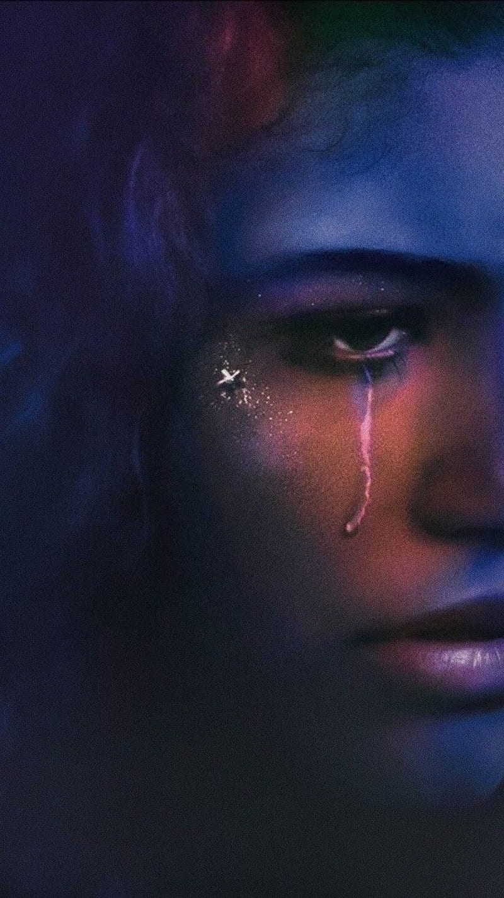
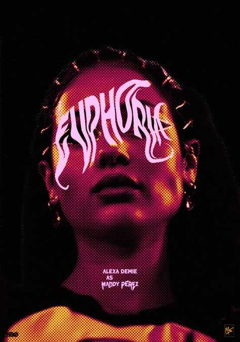

História de Euphoria
Euphoria é uma série de televisão americana de drama adolescente criada por Sam Levinson, baseada na minissérie israelense de mesmo nome, de 2012, dos roteiristas Ron Leshem, Daphna Levin e Tmira Yardeni. Euphoria aborda as experiências pessoais de um grupo de adolescentes do ensino médio em relação a drogas, amizades, traumas, sexo, bullying, aceitação, inseguranças e sexualidade.
A série foi recebida com uma resposta positiva dos críticos, com muitos elogios indo para sua atuação, história, recursos visuais e abordagem de temas maduros.

